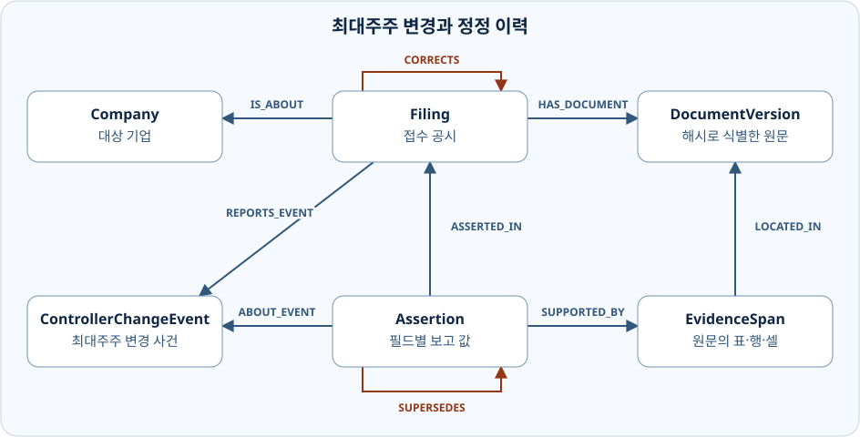

정정 공시의 유효 값과 근거를 어떻게 보존하는가
설계와 검증
최대주주 변경 공시에서 지분율만 정정하는 경우, 그래프는 지분율의 출처를 새 문서로 바꾸면서 변경일의 원래 근거도 계속 돌려줘야 합니다. 이 동작을 구현하려면 공시 한 건을 사건의 속성으로 통째로 옮기는 방식으로는 부족했습니다.
최대주주 변경 온톨로지 한눈에 보기

공개용 용어표는 영문을 대문자로 표시하고 Excel에서 한글을 읽을 수 있게 저장했습니다. 실제 라벨과 IRI는 정의서에 연결된 원본에서 확인할 수 있습니다. LPG 용어표 다운로드 · RDF·OWL 및 FIBO 용어표 다운로드
연구 질문과 설계 근거
연구 질문은 부분 정정이 발생했을 때 조회 기준일에 유효한 값과 그 출처를 함께 복원할 수 있는지입니다. 기준일까지의 지분율, 정정된 항목, 실제 변경일, 표 셀의 위치를 각각 질의로 정의했습니다. 공시의 정보가 어디서 파생됐는지를 표현하는 문제는 출처 모델링과 연결됩니다. W3C PROV-O는 이 구분의 참조 틀이며, 파일럿은 프로젝트 고유의 Neo4j 라벨과 관계를 사용합니다. W3C PROV-O
어느 날짜까지 어떤 내용이 보고됐는지, 정정으로 무엇이 달라졌는지, 실제 변경을 확인할 근거가 있는지, 그 근거가 원문 어디에 있는지를 먼저 정했습니다. 초기 온톨로지에서 보유현황과 법적 소유를 구별한 것도 같은 맥락입니다. FIBO와 개념을 대조하면서 보고서에 적힌 관측값에 주체와 역할, 보고 시점이 필요하다는 점을 확인했습니다. 최대주주 변경 온톨로지 · FIBO 비교 기록
표현 모델과 기준일 질의
사건에는 기업의 변경 건을, 공시에는 접수번호와 접수일을 둡니다. 주장은 특정 공시가 어떤 항목에 대해 보고한 값입니다. 지분율에는 최대주주 개인인지 ‘최대주주등’의 합산인지 판단할 수 있도록 집계 범위를 붙입니다. 근거에는 문서 버전과 표의 셀 위치를 기록합니다. 접수일, 변경일, 변경확인일은 따로 저장합니다. 수집 시각은 원문을 언제 관측했는지 기록하는 데 씁니다.
정정은 두 층에서 표현했습니다. 공시 사이의 CORRECTS는 어느 문서를 정정했는지 가리킵니다. 주장 사이의 SUPERSEDES는 어떤 항목의 값이 바뀌었는지 가리킵니다. 조회는 먼저 기준일까지 접수된 주장만 선택하고, 그 집합에서 같은 사건·항목·집계 범위의 정정으로 대체된 주장을 제외합니다. 변경일은 기업 사건이 일어난 시점이고 접수일은 해당 주장을 조회할 수 있게 된 시점입니다. 두 날짜를 분리하면 나중에 발표된 정정으로 과거 답을 바꾸는 오류를 방지할 수 있습니다. 같은 항목과 집계 범위를 확인하기 어렵거나 관련 공시 후보가 여럿이면 연결을 보류하는 것이 설계 원칙입니다. 현재 코드는 사전에 검토한 공시 쌍으로 이 동작을 시험합니다. 적재·조회 코드
사례 검증과 관찰 결과
조회 기준일은 2026년 10월 28일과 29일이다. 첫 기준일에는 원공시를, 둘째 기준일에는 정정 공시까지 반영했다.
| 조회 기준일 | 지분율 | 지분율 근거 | 보고된 변경일 |
|---|---|---|---|
| 2026-10-28 | 52.25% | 20261028800611 표 1 · 행 6 · 셀 2 | 2026-10-27 |
| 2026-10-29 | 52.39% | 20261029800490 표 4 · 행 6 · 셀 2 | 2026-10-27 |
표·행·셀 번호는 원문 파서가 1부터 센 순서입니다. 변경일의 근거는 두 조회에서 모두 원공시에 남았습니다. Neo4j에는 노드 12개와 관계 21개를 적재했고 같은 자료로 다시 실행해 동일한 조회 결과를 확인했습니다. 검증 단위는 한 기업의 한 사건과 공시 두 건입니다. 지분율 변경과 변경일 유지라는 두 기대 동작을 확인했으며, 대규모 추출 정확도는 이 사례에서 추정하지 않습니다.
SHACL 검증의 범위와 한계
- 구조 적합성. RDF로 변환한 주장에 근거 관계가 존재하는지, 날짜와 수치가 지정된 자료형인지 검사합니다.
- 시간 적합성. 기준일별 Cypher 질의로 이후 접수된 주장이 반환되는지와 변경되지 않은 항목의 근거가 유지되는지 시험합니다.
- 원문 일치. 접수번호와 표 셀을 열어 값, 단위, 집계 범위가 보고 내용과 일치하는지 확인합니다.
Neo4j는 현재 파일럿을 실행하는 저장소입니다. SHACL에서 자료형과 관계 조건을 충족한 값도 원문을 잘못 읽은 결과일 수 있습니다. 따라서 구조 적합성과 원문 일치는 별도로 판정합니다. 후속 EC2 검증에서는 RDF에서 출처를 제거했을 때 SHACL이 실패하고 복원하면 통과하는지 확인했습니다. W3C SHACL 표준 · SHACL GraphRAG 사례
네 그래프 조건의 EC2 비교
금호에이치티를 포함한 코스피 30개사의 최대주주 변경 공시에서 구조화 질의 151개를 평가했습니다. 원문 셀을 대조할 수 있는 사례를 골랐고, 긍정 질의 91개와 반례 60개를 구성했습니다. ① LPG는 정정 이력과 원문 근거를, ② OWL은 사건 유형 계층과 근거를 조회합니다. ③은 사건 ID로 두 결과를 결합하고, ④는 같은 사실과 규칙을 단일 LPG에 담아 조회합니다.
| 질문 | ① LPG | ② OWL | ③ 결합 | ④ 단일 LPG |
|---|---|---|---|---|
| 기준일·원문 근거 | 30/30 | 0/30 | 30/30 | 30/30 |
| 상위 유형·근거 | 0/30 | 30/30 | 30/30 | 30/30 |
| 복합 답·근거 | 0/31 | 0/31 | 31/31 | 31/31 |
| 공개 전 | 30/30 | 30/30 | 30/30 | 30/30 |
| 다른 유형 | 0/30 | 30/30 | 30/30 | 30/30 |
결합과 단일 LPG의 전체 응답은 같았습니다. 복합 질의 31개를 각각 다섯 번 실행했을 때 조회 지연 p50·p95는 결합이 10.64·16.02ms, 단일 LPG가 4.08·5.32ms였습니다. 단일 EC2에서 측정했으며 OWL 사전 추론 시간은 포함하지 않았습니다. 표의 0건은 답과 근거를 모두 반환해야 통과하는 채점 기준에 따른 결과입니다.
검증 항목별 결과
- SHACL 구조 검사. 출처 링크를 뺀 RDF에서 위반을 확인했고 링크를 복원하면 통과했습니다.
- 시점 조회. 공개 전 값을 차단하고 정정 전후의 유효 값과 출처를 확인했습니다.
- 추론과 식별자. 공리를 삭제한 뒤 추론을 다시 계산하고 복원 결과를 확인했습니다. RDF 재가져오기에서 URI를 보존했고, 주입한 미정의 유형은 알려진 상위 유형으로 추론되지 않았습니다.
이 결과는 구조화 질의와 검증 규칙에 대한 것입니다. 자연어 GraphRAG의 정답률과 인용 정확도는 평가 계획에 남아 있습니다. 온톨로지 정의서와 발표자료 · EC2 검증 기록